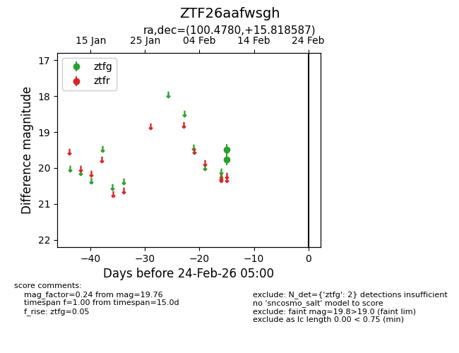
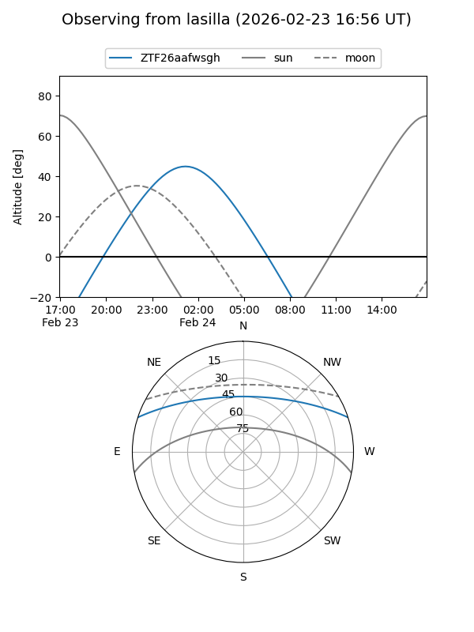
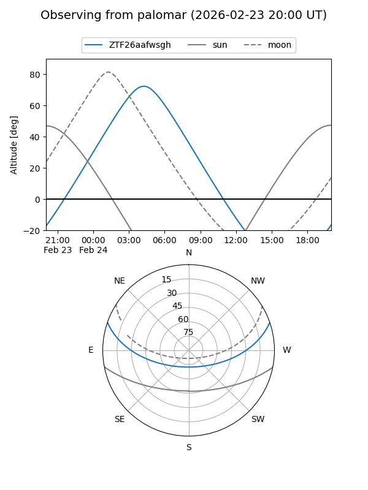

ZTF26aafwsgh
Target ZTF26aafwsgh at 2026-02-24 09:08
Aliases and brokers:
FINK: link
Lasair: link
ALeRCE: link
alt names
ZTF26aafwsgh (ztf,fink_ztf)
Coordinates:
equatorial (ra, dec) = 100.4780,+15.81859
equatorial (HMS+DMS) = 06:41:54.73,+15:49:06.91
galactic (l, b) = (197.7511,+5.08981)
Flags:
Photometry:
last ztfg=19.76
2 ztfg detections
Lightcurve

Visibility


Additional plots